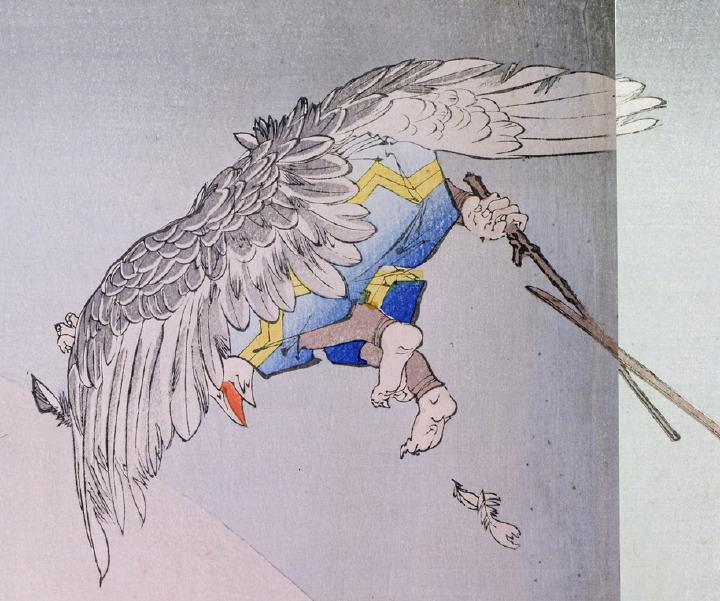

飛び退る烏天狗の後姿。大きな翼がある。空色に黄色の模様が入った袴をはき、黒い脚絆を付けている。嘴は鋭く尖っている。右手に持った木の棒で牛若丸の太刀を受けている。
著作者：秀湖／出典：親書誌：U426_nichibunken_0144：御曹子牛若丸鞍馬ニ劍法ヲ修ス；オンゾウシウシワカマルクラマニケンポウヲシュウス／日付：2009／資源識別子：U426_nichibunken_0144_0001_0001
Copyright (c)2010- International Research Center for Japanese Studies, Kyoto, Japan. All rights reserved.